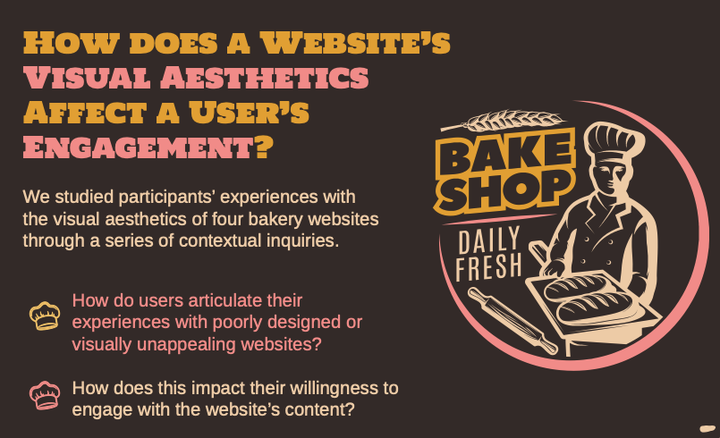
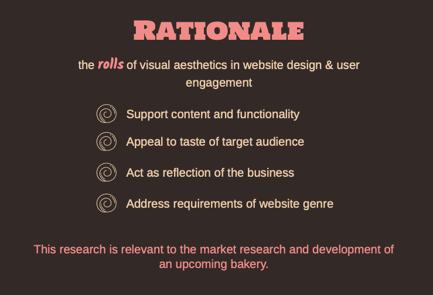
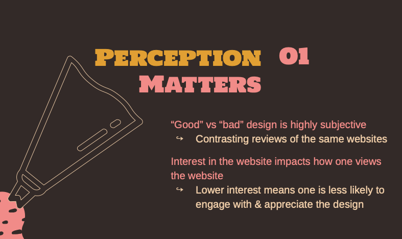
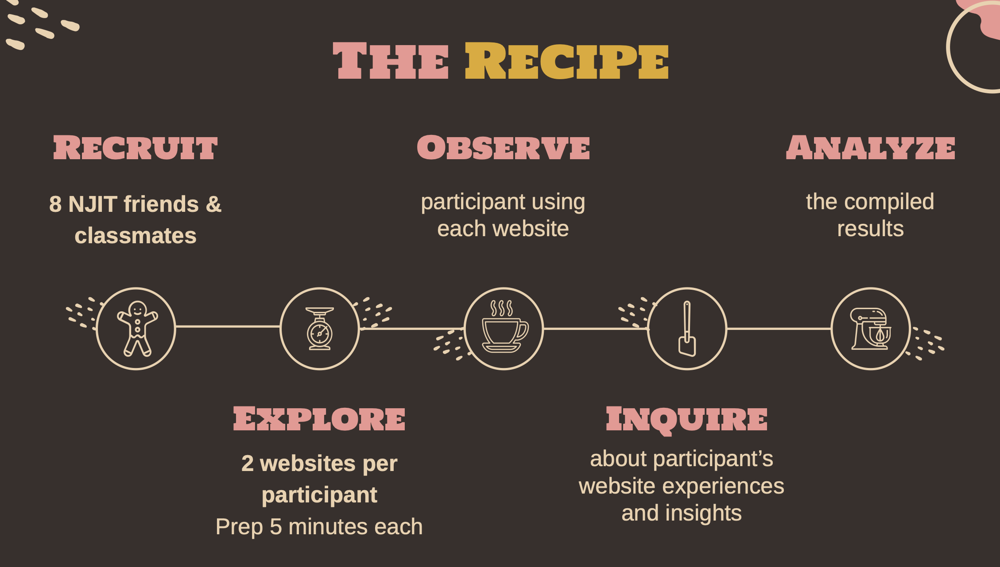

About Project
As a researcher for the All Baked Up project, I collaborated with two team members to examine the relationship between visual aesthetics and user engagement in bakery websites. Our research aimed to understand how design elements such as color, typography, and layout influence users’ perceptions and interactions.
Outcome
- Impact & Outcomes:
- User Engagement: Our research confirmed that visually appealing bakery websites significantly enhance user engagement. Participants responded positively to clean layouts, high-quality images, and intuitive navigation, while cluttered or poorly designed websites led to frustration and disengagement.
- Design Insights: We identified best practices for bakery website aesthetics, emphasizing clear menu structures, strategic use of colors, and the importance of authentic imagery to build trust and appeal to users.
- Practical Applications: Our findings provide valuable insights for small businesses looking to optimize their online presence. By applying our recommendations, bakeries can create more engaging and customer-friendly websites, potentially increasing sales and customer retention.
- Key Learnings & Skills:
- UX Research & Analysis: Conducted qualitative research through semi-structured interviews and usability testing, refining our ability to assess user needs and preferences.
- Data Interpretation: Applied structured coding techniques to analyze participant feedback, uncovering trends in user engagement and website design effectiveness.
- Collaboration & Project Management: Worked closely as a team to plan, execute, and document our research findings, ensuring a structured approach to user-centered design evaluation.
- Web Usability & Design Principles: Strengthened our understanding of how visual aesthetics impact usability, reinforcing the connection between design choices and user behavior.
Gallery




❮
 ❯
×
❯
×